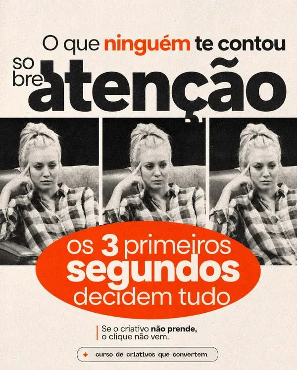
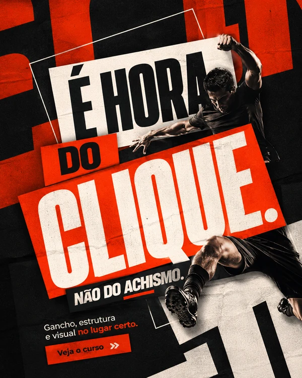

Criativos que Convertem
Crie anúncios que dão um motivo para comprar.
Encontre o argumento, escreva o gancho e transforme sua ideia em um anúncio que faz sentido para o público.
Do planejamento ao criativo pronto para testar.
Gestores de tráfego / Social medias / Designers
01 / A mensagem muda a peça
Mais do que trocar
a imagem do anúncio.
Quando você sabe o que quer comunicar, o gancho e o visual ganham direção. Veja três exemplos do próprio curso.

Uma pergunta fica no ar.
A abertura convida a descobrir o que ainda não foi contado.
A imagem apresenta a ideia.
O olhar atravessando o papel reforça a mensagem sobre atenção.

O texto dá uma direção.
A peça conecta o problema ao próximo passo que propõe.
02 / O raciocínio na prática
Um roteiro.
Quatro funções.
O gancho abre a conversa. Os próximos trechos dão um motivo para continuar e mostram o que fazer.
Toque nas etapas para ver este exemplo de anúncio do curso.
Chamar quem vive o problema
“Seu cliente pediu outro criativo. O que você vai mudar?”
A situação é familiar para quem gerencia campanhas. O gancho chama esse público para a conversa.
Ler o roteiro completo
- Gancho. Seu cliente pediu outro criativo. O que você vai mudar?
- Interesse. Antes de trocar a imagem, descubra qual dúvida está impedindo a pessoa de avançar.
- Desejo. Com esse argumento, você sabe o que dizer, o que mostrar e qual variação testar.
- Ação. Conheça o Criativos que Convertem e veja como montar esse processo.
03 / Dentro do curso
Do briefing
ao próximo teste.
O método MIRA organiza o caminho: mapear referências, interpretar a mensagem, roteirizar e agir.
Ver tudo o que está incluído01Público e oferta
Investigue dores, desejos e objeções. Encontre o que o público precisa perceber no produto, além do preço.
02Repertório com o MIRA Radar
Organize referências e identifique abordagens para seus testes. Um anúncio encontrado é uma referência; seu resultado precisa ser verificado.
03Ganchos e roteiros
Escreva a abertura e organize interesse, desejo e ação. Construa cada trecho para o objetivo da peça.
04Gravação no celular
Enquadramento, luz e áudio. Grave em takes curtos, com sua fala, o produto em uso ou cenas de apoio.
05Visual, edição e IA
Monte estáticos com IA sem o visual genérico. Combine motion, cenas geradas e gravações reais para apoiar a mensagem.
06Métricas e novos testes
Leia retenção e cliques para levantar o que melhorar. Compare novos ganchos e argumentos com uma intenção clara.
Gestor de tráfego
Saiba o que pedir ao cliente e qual argumento levar para o próximo teste.
Social media
Transforme as dúvidas do público em pautas, ganchos e roteiros.
Designer
Conecte imagem, texto e hierarquia ao objetivo do criativo.
Com quem você aprende
Carlos Henrique
Mais de dez anos em design, branding e comunicação visual, organizados em decisões que você pode aplicar na próxima peça.
04 / Curso + materiais de apoio
Um processo para criar.
Repertório para começar.
Aulas e ferramentas para sair da ideia e chegar ao criativo que você vai testar.
Curso Criativos que Convertem
Do público ao roteiro, visual e teste. Acesso vitalício às aulas.
Ferramenta MIRA Radar
Pesquisa e organização de referências. Bônus da turma.
Pack de 500 hooks
Referências de abertura para adaptar ao público e à oferta.
Templates de roteiro
Estruturas para organizar os anúncios dos seus clientes.
Conheça a próxima turma
Curso completo + bônus
R$ 297
à vista
ou 12x de R$ 29,64
Total parcelado: R$ 355,68
Falar sobre minha inscriçãoO pagamento ainda não está disponível aqui. Fale comigo no Instagram sobre a turma.
7 dias de garantiaApós a inscrição, conforme as condições da oferta.
Antes de começar
Vamos às dúvidas.
Preciso aparecer nos vídeos?
Não. Você pode usar narração, bastidores, gravação de tela ou o produto em uso. O formato depende da mensagem que precisa comunicar.
Preciso de equipamento profissional?
Você pode começar com o celular, iluminação natural e ferramentas acessíveis de edição. As aulas incluem enquadramento, áudio e gravação em pequenos takes.
Serve para negócios locais e serviços?
Sim. O raciocínio parte do público, do problema e da oferta. Você adapta o argumento e a chamada para ação ao negócio que atende.
Por quanto tempo tenho acesso?
O acesso às aulas e aos templates de roteiro é vitalício. MIRA Radar e acervo de hooks são bônus da turma; confira os períodos de acesso, suporte e atualização antes de se inscrever.
Como funciona a garantia?
Você tem 7 dias corridos após a inscrição para avaliar o material. Se o curso não atender às suas expectativas, solicite o reembolso pela plataforma de pagamento.
O curso ensina a configurar campanhas?
O foco é a criação: público, mensagem, roteiro, visual e testes de criativos. O resultado da campanha também depende da oferta, do público, da página e da execução.